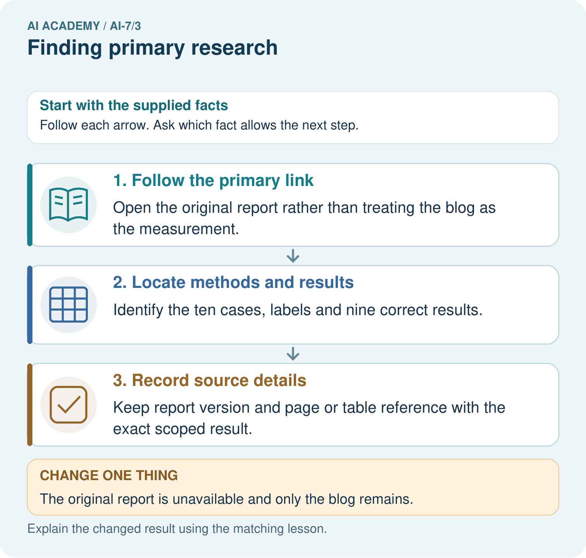
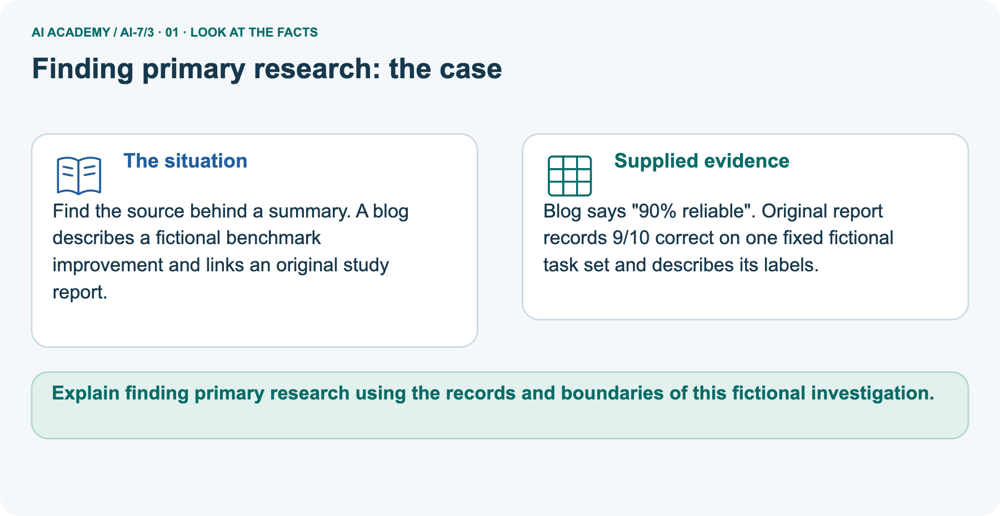
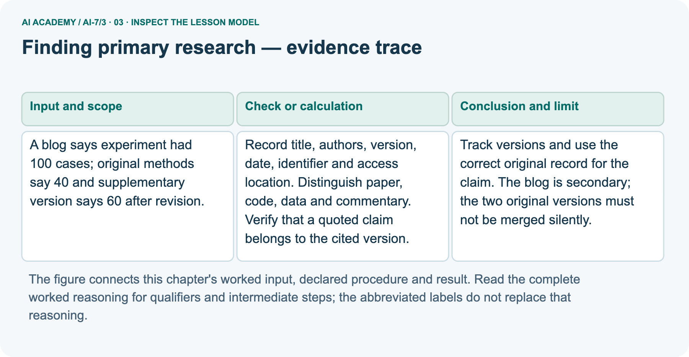
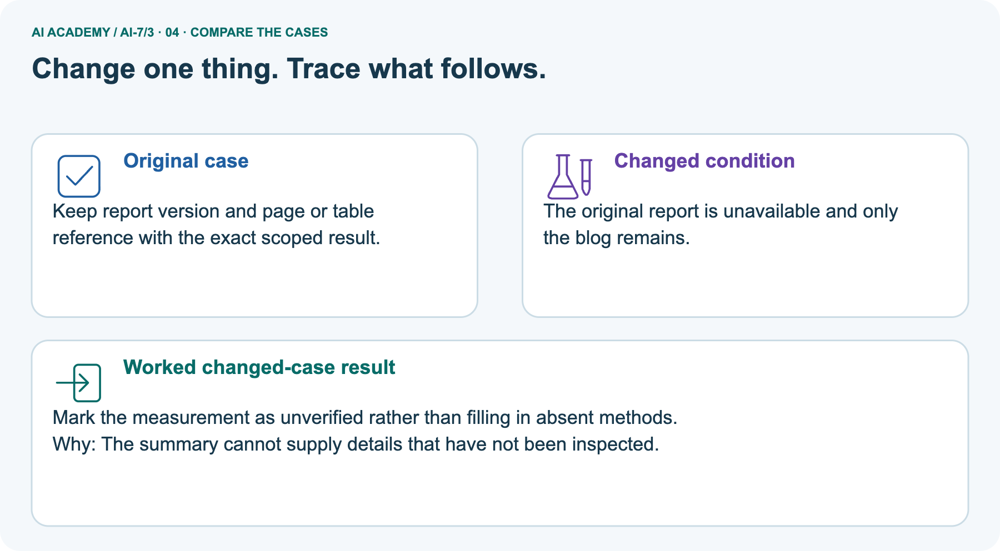
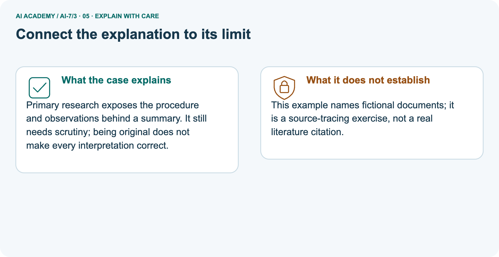
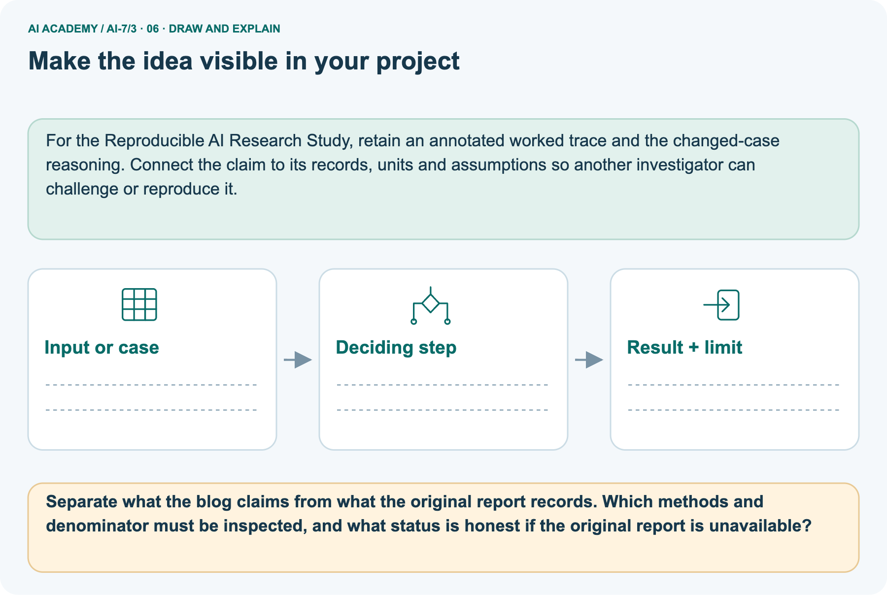

AI Academy · Level 7 · Grade 12 · Week 3 · Workbook
Finding primary research
Learn to understand, design, build, test and explain AI systems responsibly.
Project: Reproducible AI Research Study
THE CONNECTED WEEK
One complete versioned source and claim trail.
Keep identity, artifact role, dataset/metric, locator, access status and unresolved mismatches together.
Keep one habit: Recall → W1–W3/W5 → independent source mismatch → literature-source project → delayed return.
Main lesson · Section 1
Recall · Retrieve before notes
Keep this task’s inputs,rule and response together.
Complete task and evidence
Try the recall before opening notes. Then use a different colour or a labelled second line to correct your explanation.
Without opening the old lesson, explain one key idea from Reading a research claim. Give an example and a mistake that the idea helps you avoid.
Reading a research claim
Main lesson · Section 5
W1 · Explain the current example
Keep this task’s inputs,rule and response together.
Complete task and evidence
Primary research reports a study’s own methods/results; secondary summaries help discovery but do not replace inspection. Record title, authors, version, date, identifier, access location and exact claim locator together with dataset/metric/denominator.
Complete fictional main cards: BLOG-R newsletter v1 says 100 cases without supplied primary support; “Room Retrieval Pilot”, Fictional Team R, STUDY-R-v1 dated 2026-01-01 methods §2 says 40; revised supplement STUDY-R-v2 dated 2026-01-02 revised methods §2 says 60. These are internal classroom card labels, not real papers or identifiers.
Keep version-specific counts; case membership/revision explanation and raw appendix are not supplied, so do not add or independently verify them. Separate BENCH-v1 fictional report methods §2 has ten fixed labelled tasks; Table 1 reports 9/10 correct. Blog “90% reliable” omits task-set scope. If original unavailable, retain secondary/unverified status and do not claim methods/results inspection.
Paper/code/data/commentary are distinct artifacts; primary status itself does not ensure quality. No actual literature search or real citation is claimed.
Explain the weekly mechanism in your own words. Use the worked scenario to name its input, decision rule and output.
Main lesson · Section 6
W2 · Trace the worked case
Keep the supplied inputs, comparison rule and evidence together.
Complete task and evidence
Primary research reports a study’s own methods/results; secondary summaries help discovery but do not replace inspection. Record title, authors, version, date, identifier, access location and exact claim locator together with dataset/metric/denominator.
Complete fictional main cards: BLOG-R newsletter v1 says 100 cases without supplied primary support; “Room Retrieval Pilot”, Fictional Team R, STUDY-R-v1 dated 2026-01-01 methods §2 says 40; revised supplement STUDY-R-v2 dated 2026-01-02 revised methods §2 says 60. These are internal classroom card labels, not real papers or identifiers.
Keep version-specific counts; case membership/revision explanation and raw appendix are not supplied, so do not add or independently verify them. Separate BENCH-v1 fictional report methods §2 has ten fixed labelled tasks; Table 1 reports 9/10 correct. Blog “90% reliable” omits task-set scope. If original unavailable, retain secondary/unverified status and do not claim methods/results inspection.
Paper/code/data/commentary are distinct artifacts; primary status itself does not ensure quality. No actual literature search or real citation is claimed.
A blog says experiment had 100 cases; original methods say 40 and supplementary version says 60 after revision. Show the intermediate steps and give the conclusion with its scope.
Main lesson · Section 7
W3 · Repair a misconception
Keep this task’s inputs,rule and response together.
Complete task and evidence
Primary research reports a study’s own methods/results; secondary summaries help discovery but do not replace inspection. Record title, authors, version, date, identifier, access location and exact claim locator together with dataset/metric/denominator.
Complete fictional main cards: BLOG-R newsletter v1 says 100 cases without supplied primary support; “Room Retrieval Pilot”, Fictional Team R, STUDY-R-v1 dated 2026-01-01 methods §2 says 40; revised supplement STUDY-R-v2 dated 2026-01-02 revised methods §2 says 60. These are internal classroom card labels, not real papers or identifiers.
Keep version-specific counts; case membership/revision explanation and raw appendix are not supplied, so do not add or independently verify them. Separate BENCH-v1 fictional report methods §2 has ten fixed labelled tasks; Table 1 reports 9/10 correct. Blog “90% reliable” omits task-set scope. If original unavailable, retain secondary/unverified status and do not claim methods/results inspection.
Paper/code/data/commentary are distinct artifacts; primary status itself does not ensure quality. No actual literature search or real citation is claimed.
A report omits this qualification: Being primary does not guarantee soundness; methods and evidence still require assessment. Explain how omitting it could change a reader's interpretation, and write an accurate replacement.
Main lesson · Section 9
W5 · Explain the limitation
Keep this task’s inputs,rule and response together.
Complete task and evidence
Primary research reports a study’s own methods/results; secondary summaries help discovery but do not replace inspection. Record title, authors, version, date, identifier, access location and exact claim locator together with dataset/metric/denominator.
Complete fictional main cards: BLOG-R newsletter v1 says 100 cases without supplied primary support; “Room Retrieval Pilot”, Fictional Team R, STUDY-R-v1 dated 2026-01-01 methods §2 says 40; revised supplement STUDY-R-v2 dated 2026-01-02 revised methods §2 says 60. These are internal classroom card labels, not real papers or identifiers.
Keep version-specific counts; case membership/revision explanation and raw appendix are not supplied, so do not add or independently verify them. Separate BENCH-v1 fictional report methods §2 has ten fixed labelled tasks; Table 1 reports 9/10 correct. Blog “90% reliable” omits task-set scope. If original unavailable, retain secondary/unverified status and do not claim methods/results inspection.
Paper/code/data/commentary are distinct artifacts; primary status itself does not ensure quality. No actual literature search or real citation is claimed.
For the worked scenario, propose one additional case that could reveal a failure, describe its expected outcome before running it, and explain what would need to remain fixed for a fair comparison.
Do not reuse W4 as a new final test after receiving feedback.
Main lesson · Section 4
Try alone · Selected transfer
Keep this task’s inputs,rule and response together.
Complete task and evidence
A search result describes a benchmark score, but the linked paper uses a different dataset. What should the comparison record contain?
Attempt this case before feedback. Record any help. Earlier examples below are further practice; a case already practised with feedback cannot establish fresh transfer.
Independent case: Apply a new case independently
Main lesson · Section 10
Project · Keep the research evidence
Preserve the question, protocol, observations, analysis and limits.
Complete task and evidence
Add a labelled finding primary research evidence sheet to Reproducible AI Research Study. Show how you can explain the mechanism and terminology of finding primary research.
Use the supplied fictional case and keep its inputs, intermediate steps, calculation or prediction, and limitation. Connect this record to last week’s record; a matching answer without a trace is insufficient.
Main lesson · Section 11
Feedback · Repair and return
Keep this task’s inputs,rule and response together.
Complete task and evidence
Revisit this idea with your teacher after a delay. Familiarity is different from explaining and using it on a changed case.
| Evidence | My record |
|---|---|
| Worked alone / hint / model | |
| First step I repaired and why | |
| New case checked later; date and result | |
| What I can now explain without notes | |
| One remaining question |
Reference bank and extra practice
Choose the reference that helps your next step.
Reference · Supported W2 record
Reference · Section 2
Reference · Supported W2 record
Keep this task’s inputs,rule and response together.
Complete task and evidence
Use W2: Trace the worked case for Finding primary research. Record the answer once; the lesson and workbook refer to the same attempt.
| Given inputs | Procedure I chose | Middle steps | Result and check |
|---|---|---|---|
Extra practice · Individual reasoning check
Reference · Section 3
Extra practice · Individual reasoning check
Keep this task’s inputs,rule and response together.
Complete task and evidence
Use the worked case for Finding primary research. Proposed explanation: “The worked result establishes every future case”. Decide whether this explanation is supported.
Point to the step or supplied fact that decides; explain your repair if needed.
Reference · Earlier W4 response copy
Reference · Section 8
Reference · Earlier W4 response copy
Keep this task’s inputs,rule and response together.
Complete task and evidence
A search result describes a benchmark score, but the linked paper uses a different dataset. What should the comparison record contain?
Extra practice · Pictured case
Reference · Section 12
Extra practice · Pictured case
Keep this task’s inputs,rule and response together.
Complete task and evidence
Find the source behind a summary. A blog describes a fictional benchmark improvement and links an original study report.
Blog says "90% reliable". Original report records 9/10 correct on one fixed fictional task set and describes its labels.
Separate what the blog claims from what the original report records. Which methods and denominator must be inspected, and what status is honest if the original report is unavailable?
Support used: alone / hint / worked example. This record is practice evidence.
Project connection: For the Reproducible AI Research Study, retain an annotated worked trace and the changed-case reasoning.
Connect the claim to its records, units and assumptions so another investigator can challenge or reproduce it.



Reference · Project milestone
Reference · Section 13
Reference · Project milestone
Keep this task’s inputs,rule and response together.
Complete task and evidence
Project: Reproducible AI Research Study
Current milestone: Frame the need. Name the user, the problem, allowed inputs and a safe simple starting method.
For the Reproducible AI Research Study, retain an annotated worked trace and the changed-case reasoning. Connect the claim to its records, units and assumptions so another investigator can challenge or reproduce it.
| Evidence to keep | My record |
|---|---|
| This week’s input and deciding step | |
| Prediction and actual result (or labelled paper trace) | |
| One change since the previous checkpoint and why | |
| One error or limit and the next test |
Extra practice · Predict,check and repair
Reference · Section 14
Extra practice · Predict,check and repair
Keep supported feedback separate from the independent case.
First supported question and optional hint
Find the source behind a summary. A blog describes a fictional benchmark improvement and links an original study report.
Which labelled step matches this detail? Keep report version and page or table reference with the exact scoped result.
1. Record source details
2. Locate methods and results
3. Follow the primary link
Hint if needed: Read the steps in the pictorial case. Match the supplied detail to the stage that performs or records it.
Practice 1: explain the deciding evidence
Check after the first attempt
After your attempt, compare with the supported explanation: Record source details Keep report version and page or table reference with the exact scoped result.
Primary research exposes the procedure and observations behind a summary. It still needs scrutiny; being original does not make every interpretation correct.
Changed-case question and optional hint
Changed-case practice: The original report is unavailable and only the blog remains. Which conclusion is supported by the supplied facts?
1. This one example guarantees correct results for every future input.
2. We can decide the result without examining the changed input or the procedure.
3. Mark the measurement as unverified rather than filling in absent methods.
Hint if needed: Use the changed condition and the deciding step in the pictorial trace. The answer must say what follows from those facts.
Practice 2: explain the deciding evidence
Check after the changed attempt
After your attempt, compare with the supported explanation: Mark the measurement as unverified rather than filling in absent methods. The summary cannot supply details that have not been inspected.
Repair and retain the record
Review Reading a research claim (ai-7/2). Goal: Explain the mechanism and terminology of reading a research claim. Short practice: Calculate the baseline and new rates for 2/10 and 4/10.
Explain both twice the rate and the percentage-point change, and say why neither measures every learner’s improvement.. Return to this week and explain what you changed.
Use Download completed work in the hosted lesson to export your answers, reflections, practice feedback and code-run evidence. Open the HTML copy to read or print it.
Drafts stay in this browser when storage is available; clear drafts on a shared device.
Earlier wording, alternatives and picture transcripts
Use this supported practice once, in the browser or on paper. Keep the reserved independent assessment for a separate first attempt before teacher feedback.
Repair a missing building block
Keep your completed work
Reference · Six-picture response sheets
Reference · Section 15
Reference · Six-picture response sheets
Choose the picture that helps explain the current step.
01. Finding primary research: the case



Find the source behind a summary. A blog describes a fictional benchmark improvement and links an original study report. Supplied facts: Blog says "90% reliable".
Original report records 9/10 correct on one fixed fictional task set and describes its labels.
Point to the given fact that matters most. Explain why it matters.
02. Follow the deciding steps


Follow the primary link: Open the original report rather than treating the blog as the measurement. → Locate methods and results: Identify the ten cases, labels and nine correct results. → Record source details: Keep report version and page or table reference with the exact scoped result.
Point to each numbered stage and explain which recorded input it uses.
03. Finding primary research — evidence trace



Finding primary research — evidence trace. A blog says experiment had 100 cases; original methods say 40 and supplementary version says 60 after revision. | Record title, authors, version, date, identifier and access location. Distinguish paper, code, data and commentary. Verify that a quoted claim belongs to the cited version. | Track versions and use the correct original record for the claim. The blog is secondary; the two original versions must not be merged silently.
Read the labels and values. Explain the relationship the model shows.
04. Change one thing. Trace what follows.



Original case: Keep report version and page or table reference with the exact scoped result. Changed condition: The original report is unavailable and only the blog remains.
Expected result: Mark the measurement as unverified rather than filling in absent methods. Reason: The summary cannot supply details that have not been inspected.
Predict before checking the worked changed-case result. Name what changed and what the supplied facts allow you to conclude.
05. Connect the explanation to its limit



Primary research exposes the procedure and observations behind a summary. It still needs scrutiny; being original does not make every interpretation correct.
Limit: This example names fictional documents; it is a source-tracing exercise, not a real literature citation.
Explain the case, then point to a limit on the claim.
06. Make the idea visible in your project



For the Reproducible AI Research Study, retain an annotated worked trace and the changed-case reasoning. Connect the claim to its records, units and assumptions so another investigator can challenge or reproduce it.
Draw your input, deciding step, result and limit. Supported question: Separate what the blog claims from what the original report records.
Which methods and denominator must be inspected, and what status is honest if the original report is unavailable?
Draw your project trace and justify the deciding step using evidence.